Produktregel für den Rand einer Produkttopologie
1. Satz
Seien  topologischer Räume und
topologischer Räume und  die Produkttopologie, so gilt für
die Produkttopologie, so gilt für  und
und  sowie den Rand:
sowie den Rand:
2. Beweis
Wir beweisen die Aussage für die kanonische Basis, daraus folgt dann nach Konstruktion der allgemeine Fall.
Sei 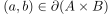, so gilt, dass jede Umgebung  – o.B.d.A. sei offen – sowohl
– o.B.d.A. sei offen – sowohl  als auch das Äußere schneidet.
Da die Projektion einer Produkttopologie eine stetig offene Abbildung ist, gilt 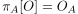.
Zusätzlich gilt für 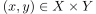, dass jede Umgebung
als auch das Äußere schneidet.
Da die Projektion einer Produkttopologie eine stetig offene Abbildung ist, gilt 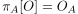.
Zusätzlich gilt für 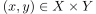, dass jede Umgebung  von
von  die Menge schneidet.
Dies ist der Fall, g.d.w. jede Umgebung von 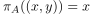 die Menge
die Menge schneidet.
Dies ist der Fall, g.d.w. jede Umgebung von 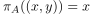 die Menge  schneidet und analog auch für
schneidet und analog auch für  .
Daraus folgt 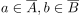 bzw. 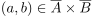
Ferner gilt, dass jede Umgebung von
.
Daraus folgt 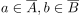 bzw. 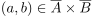
Ferner gilt, dass jede Umgebung von  auch das Äußere in mind. einem Punkt schneidet:
Dies ist der Fall g.d.w. mind. eine Koordinate eines Punktes jeder Umgebung nicht mit übereinstimmt, d.h. o.B.d.A. 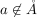.
Daraus folgt 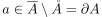 und durch analoge Argumentation für 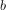 folgt dann:
auch das Äußere in mind. einem Punkt schneidet:
Dies ist der Fall g.d.w. mind. eine Koordinate eines Punktes jeder Umgebung nicht mit übereinstimmt, d.h. o.B.d.A. 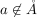.
Daraus folgt 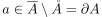 und durch analoge Argumentation für 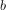 folgt dann:
Dabei gilt auch Gleichheit, da aufgrund der Äquivalenzen (vgl. "g.d.w.") auch die andere Richtung folgt.